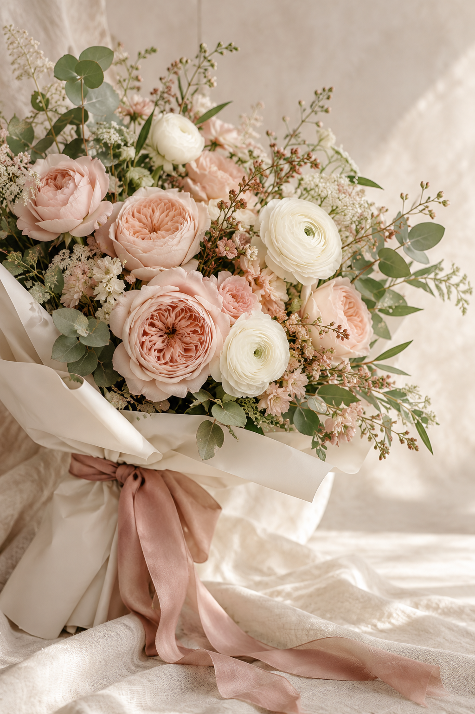
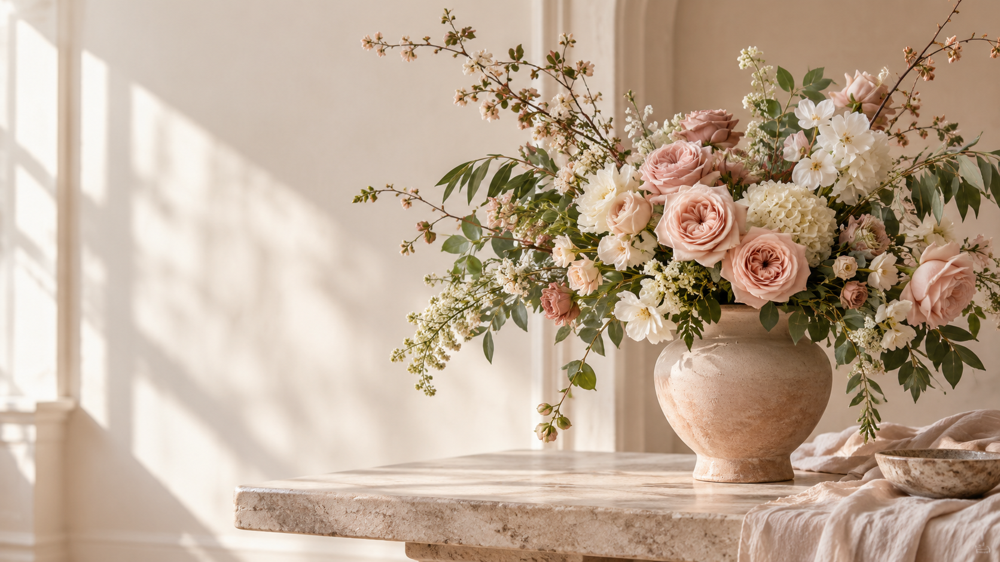
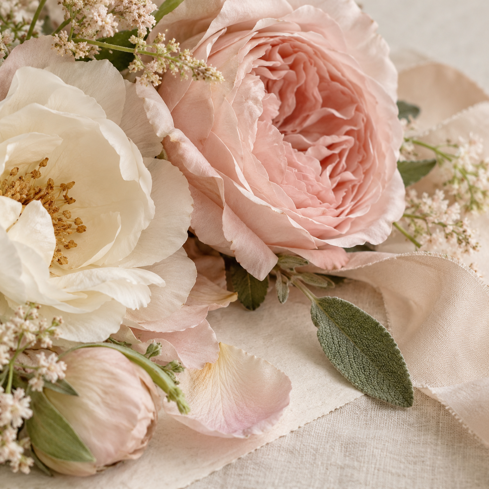

Brisa de jardín
Flores de temporada en tonos suaves y envoltura natural.
$480 MXNSolicitar arregloFlores para momentos bonitos
Arreglos con intención, color y un poquito de magia. Encuentra un detalle para celebrar, agradecer o simplemente decir “estoy pensando en ti”.

Catálogo
Explora una selección editorial y prueba cómo una página real puede presentar opciones, acabados y precios de forma clara.

Flores de temporada en tonos suaves y envoltura natural.
$480 MXNSolicitar arreglo
Una composición intensa para aniversarios y celebraciones.
Desde $620Consultar disponibilidad ↗Un regalo sencillo para alegrar cualquier día.
Desde $280Ver opciones ↗Colección especial
Para cada ocasión
Nuestra forma
Seleccionamos cada flor pensando en la emoción que quieres transmitir. Diseñamos arreglos que se sienten personales, frescos y fáciles de elegir.
Palabras bonitas
Testimonios, zonas de entrega y preguntas frecuentes ayudan a convertir una visita en una conversación.
“El arreglo llegó precioso y la tarjeta hizo toda la diferencia.”— Sofía, cliente My Love
“Pedí flores para un aniversario y la presentación superó lo que imaginaba.”— Valeria, cliente My Love
“La atención para elegir colores fue cercana y el arreglo llegó puntual.”— Daniela, cliente frecuente
Centro, República, San Patricio y zonas cercanas.
Consultar coberturaCuidados, horarios y pedidos especiales en un solo lugar.
Ver FAQ ↗Antes de elegir
Sí. La disponibilidad se confirma según temporada y podemos proponer una combinación.
La página puede presentar paquetes para eventos, mesas de postres o decoración floral.
En una página real, el botón puede llevar a WhatsApp o a un formulario de solicitud.
Sí. Una página real puede mostrar opciones de tamaño, color, envoltura y mensaje.
Depende de la temporada y disponibilidad; el formulario puede ayudar a confirmar la fecha.
La cobertura puede mostrarse por zona y confirmarse antes de coordinar cada entrega.
Sí. El pedido puede incluir un mensaje breve para acompañar el arreglo.
Podemos adaptarlo a tu negocio, catálogo, colores, contenido y forma de atender a tus clientes.
Esta función está disponible en una página real. En este template está desactivada para demostración.